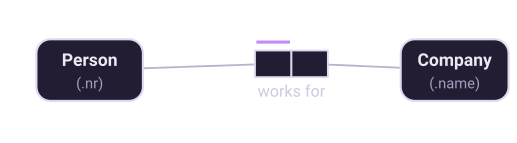
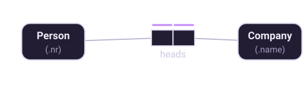
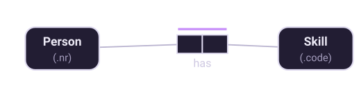
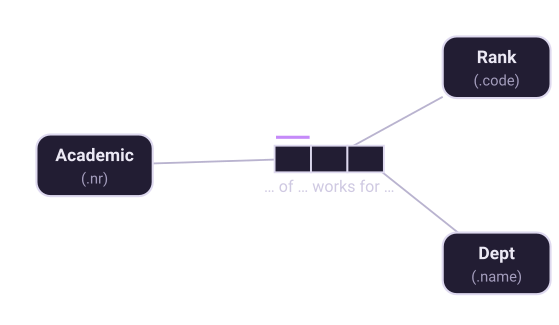
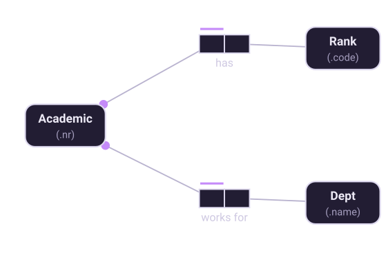

Chapter 5 of 10
Uniqueness
If you learn one constraint, learn this one. It carries more meaning than the rest combined.
What a uniqueness bar says
A uniqueness constraint is drawn as a bar over one or more role boxes. It asserts that, in the fact table for that fact type, entries in those roles occur at most once — no duplicates for that column combination.
On a binary fact type there are exactly three useful arrangements, and between them they express what other notations call cardinality.

This is many-to-one. Read it as: the Person role determines the fact, so given a person there is at most one company. Nothing stops a company from having many employees, because no bar constrains the Company role.

Two separate bars make it one-to-one. Note that these are two constraints, not one — each says something on its own, and you can have either without the other.

One bar spanning both roles is many-to-many: a person may have many skills and a skill may be held by many people, but the same person-skill pair is not recorded twice. This is the constraint people forget to think about, and it is why "many-to-many" is not the same as "no constraint at all".
The arity check
Uniqueness constraints do more than describe cardinality: they tell you whether an n-ary fact type deserves to exist. Halpin gives the rule as a sufficient condition for splittability:
Consider a ternary that tries to record an academic's rank and department at once:

Each academic has one rank and works for one department, so the uniqueness constraint covers just the Academic role — and misses two. The fact type is not elementary. Split it on the source of the constraint:

Turned around, this gives the working rule: on an n-ary fact type, every internal
uniqueness constraint must span at least n−1 roles. A ternary may carry a
constraint over two of its three roles; a constraint over just one means it should be two
binaries. Factum checks this and reports uniqueness-too-narrow when it fails.
The related idea is worth stating: if a fact type is elementary, all of its functional dependencies are implied by its uniqueness constraints. When you find an FD that is not implied, you have found a fact type that needs splitting — which is normalization, arrived at from the conceptual side and without ever mentioning normal forms.
External uniqueness
Sometimes the combination that is unique spans different fact types. Chapter 3 showed the case: a room is identified by its building together with its room number, and those are two separate facts. The constraint is drawn as a circled bar linked to each role it covers, and it applies to the natural join of the predicates.
When an external uniqueness constraint provides the primary way of referring to an object type, mark it as the preferred identifier. Factum draws it with a doubled circle and uses it when mapping to a database.
A practical way to get these right
Do not reason about uniqueness abstractly. Populate the fact type with two rows from the real report and ask the domain expert whether both could be true at once:
Person 715 works for Dept 'Computer Science'
Person 715 works for Dept 'Mathematics'"Can the same person appear twice with different departments?" is a question anyone can answer. If the answer is no, the Person role gets a bar. If the answer is "well, joint appointments exist", you have just learned something the original report never showed you.
Going further. This chapter is the short version. Fact-Based Agents covers it as “The Constraint Family” — all eight constraint kinds in one place, with a summary table and the alethic/deontic distinction.
Eighteen chapters, 61 diagrams and 38 working models, on Leanpub.